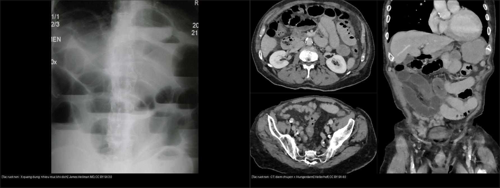
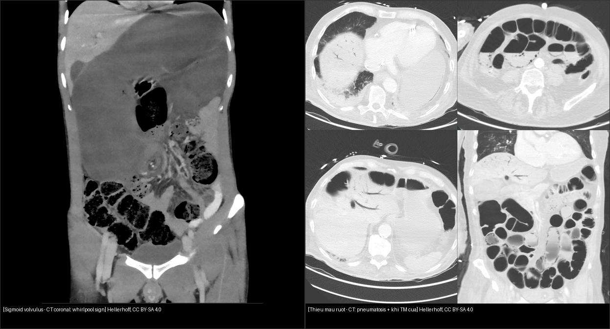
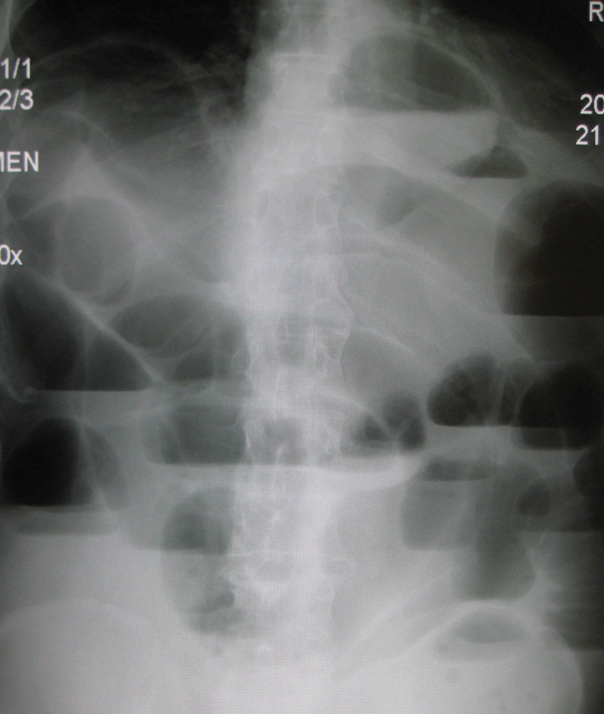
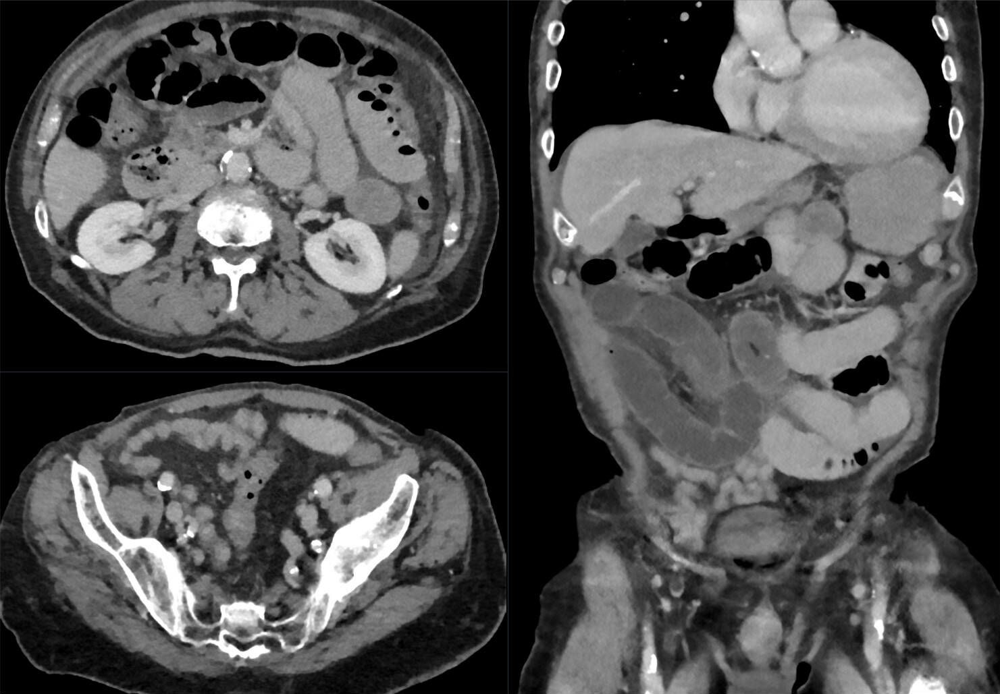
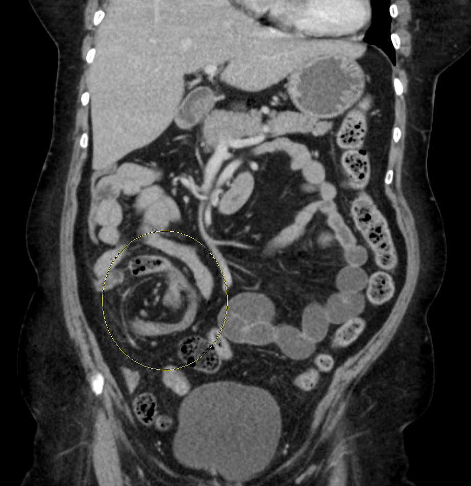
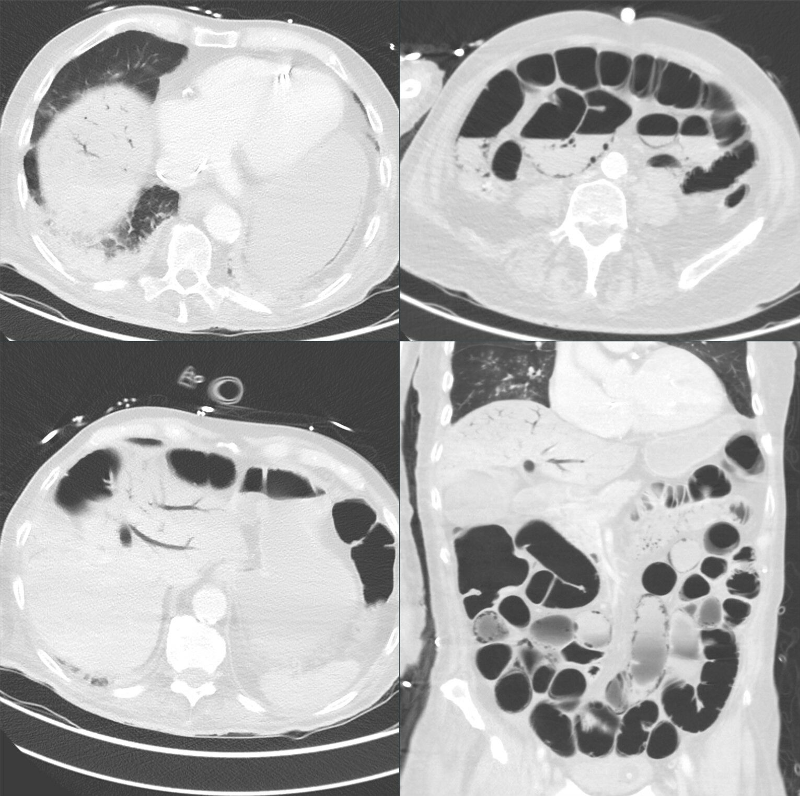

162 — Tắc ruột non/già, quai kín & thiếu máu mạc treo / SBO & Ischemia
Tags: pattern:tac-ruot vung:ruot protocol:CT-bung-cap
Mức chắc chắn (certainty): tổng hợp y văn (literature synthesis) — nhóm tự biên từ y văn mở, chưa gắn ca nguyên văn đơn lẻ.
1. Tổng quan — điểm chuyển tiếp + quai kín + mất ngấm
- Tắc ruột non: quai giãn > 2,5–3,0 cm (đại tràng > 6 cm, manh tràng > 9 cm là báo động vỡ!) + xẹp hạ lưu + điểm chuyển tiếp + dấu phân ruột non (small bowel feces) ngay trước điểm chuyển. TẠI SAO tìm điểm chuyển + Laplace (áp lực thành ∝ áp suất × bán kính): quai càng to càng dễ vỡ, nguyên nhân quyết định mổ hay không.
- Chuỗi thiếu máu thành ruột: niêm mạc → xuyên thành (transmural) — TẠI SAO mất ngấm + pneumatosis + khí cửa là muộn: niêm mạc chết trước, vỏ gan khí < 2 cm là máu tĩnh mạch chết dội về.
- Quai kín: đoạn ruột tắc 2 đầu (U/C) + xoắn mạch (whirl) + 2 mỏ chim — nguy cơ hoại tử cao gấp bội.
- Thiếu máu: mất ngấm thành + phù mạc treo + khí thành (pneumatosis) + khí TM cửa (sát vỏ gan < 2 cm) = mổ tối khẩn.
2. Gamut chướng + nôn + bí trung đại tiện
- Dính sau mổ: điểm chuyển + không khối — thử bảo tồn (sonde + nhịn ăn) nếu không thiếu máu.
- Quai kín/xoắn: whirl + chữ C + mất ngấm — mổ ngay.
- Tắc ruột già (u): đại tràng giãn + hẹp đột ngột (apple-core) — stent/mổ.
- Liệt ruột: giãn lan tỏa không điểm chuyển + sau mổ/nhiễm trùng — nội khoa.
3. Bảng mổ-theo dõi
| Thực thể (entity) | Hình ảnh | Chốt vào (rule-in) | Chốt loại (rule-out) | Gợi ý xác nhận |
|---|---|---|---|---|
| SBO dính đơn thuần | > 2,5 cm + điểm chuyển + phân ruột + còn ngấm | Điểm chuyển + ngấm còn | Mất ngấm/whirl → quai kín | Bảo tồn + sonde + theo dõi |
| Quai kín | U/C + whirl + 2 mỏ chim (beak) | Xoắn mạch = hoại tử cao | Còn ngấm + không whirl → đơn thuần | Mổ ngay |
| Thiếu máu mạc treo | Mất ngấm + pneumatosis + khí TM cửa | Mất ngấm là chốt (xuyên thành!) | Còn ngấm → chưa hoại tử | Mổ tối khẩn |
| Tắc ruột già do u | Apple-core + đại tràng > 6 cm | Hẹp ác tính + manh tràng > 9 cm = vỡ! | Không điểm chuyển → liệt | Stent/mổ |

Trái: X-quang đứng — nhiều quai giãn với mức khí-dịch ngang (air-fluid levels). Nguồn: James Heilman MD, CC BY-SA 3.0. Phải: CT (axial + coronal) tắc non do dính — quai trên giãn "đói" (Hungerdarm) rồi đổi cỡ đột ngột tại điểm chuyển. Nguồn: Hellerhoff, CC BY-SA 4.0. Ảnh ghép letterbox.
Trái: sigmoid volvulus — CT coronal có dấu whirlpool (mạc treo xoáy). Nguồn: Hellerhoff, CC BY-SA 4.0. Phải: thiếu máu mạc treo — CT cửa sổ phổi thấy pneumatosis (khí trong thành ruột) + khí tĩnh mạch cửa (nhánh khí hình cành cây trong gan). Nguồn: Hellerhoff, CC BY-SA 4.0. Ảnh ghép letterbox.Dấu hiệu chốt cần nhớ
- Điểm chuyển tiếp (transition point): nơi quai giãn chuyển đột ngột sang quai xẹp — mấu chốt chẩn đoán tắc cơ học (khác liệt ruột giãn lan tỏa, không điểm chuyển).
- Dấu phân ruột non (small bowel feces sign): bã phân trộn bọt khí ngay trên điểm chuyển — xác nhận tắc mạn/dính.
- Quai kín (closed loop): đoạn ruột tắc cả hai đầu → hình U/C, whirlpool, 2 mỏ chim (beak) — nguy cơ xoắn mạch/hoại tử cao, mổ ngay.
- Xoắn đại tràng: sigmoid → "coffee bean/coffee cup" (whirlpool); manh tràng → quai lớn di lệch sang trái trên, có whirlpool.
- Thiếu máu xuyên thành: mất ngấm thành ruột (tăng HU sau tiêm < 20 HU so với trước) + pneumatosis + khí TM cửa (nhánh khí trong gan) = mổ tối khẩn.
4. Protocol CT bụng cấp
- Cản quang TM thì cửa + MPR (điểm chuyển, whirl, mạch mạc treo).
- Không uống cản quang thường quy; theo dõi quai + dịch tự do tăng dần.
5. Cạm bẫy
- Thoát vị bịt (obturator) ở cụ bà gầy — tìm lỗ bịt khi SBO không rõ nguyên nhân.
- Khí TM cửa lành tính sau nội soi/bóng — bối cảnh + mất ngấm mới mổ.
- Liệt ruột sau mổ sớm tưởng tắc cơ học — không điểm chuyển = nội khoa.
- Thành ruột tăng tỷ trọng sẵn thì không tiêm giả còn ngấm — xuất huyết nội thành làm HU nền cao nên thì tĩnh mạch vẫn sáng! Luôn so tăng HU 2 thì (tăng < 20 HU = không ngấm thật = hoại tử!).
6. Tự lượng giá — Blind Quiz
Ca 1 — Bà cụ đau quặn bụng, nôn, bí trung đại tiện, có sẹo mổ cũ. X-quang đứng dưới đây.

- Gợi ý lâm sàng (clinical context): đau cơn, nôn, chướng, tiền sử mổ bụng.
- Câu hỏi: Mô tả dấu hiệu chính? Đây là tắc cao hay thấp? Chẩn đoán hàng đầu + bước tiếp theo?
Bấm để hiện đáp án (findings + chẩn đoán)
- Dấu hiệu (findings): nhiều quai ruột giãn với mức khí-dịch ngang (air-fluid levels) trên phim đứng.
- Chẩn đoán (diagnosis): tắc ruột non — nghĩ dính sau mổ; X-quang chỉ gợi ý, CT bụng cấp để tìm điểm chuyển/quai kín/mất ngấm.
- Nguồn ảnh: James Heilman MD, Wikimedia Commons, CC BY-SA 3.0.
Ca 2 — CT tắc non do dính (chưa mất ngấm). Mổ hay theo dõi?

- Câu hỏi: Tìm điểm chuyển? Có dấu hiệu mất ngấm/quai kín không? Xử trí?
Bấm để hiện đáp án (findings + chẩn đoán)
- Dấu hiệu (findings): quai non giãn "đói" (Hungerdarm) phía trên + điểm chuyển đổi cỡ đột ngột do dải dính; thành ruột còn ngấm, không whirlpool, không pneumatosis.
- Chẩn đoán (diagnosis): tắc ruột non dính đơn thuần → bảo tồn (sonde mũi-dạ dày + nhịn ăn + bù dịch) và theo dõi sát; mổ khi xuất hiện dấu hiệu "gắt" (mất ngấm, quai kín, dịch tăng).
- Nguồn ảnh: Hellerhoff, Wikimedia Commons, CC BY-SA 4.0.
Ca 3 — CT coronal: khối ruột xoáy kèm manh tràng di lệch. Đây là gì?

- Câu hỏi: Nhận diện dấu hiệu? Tắc ruột non hay đại tràng? Cấp cứu hay không?
Bấm để hiện đáp án (findings + chẩn đoán)
- Dấu hiệu (findings): quai ruột xoáy (whirlpool — vòng vàng) + manh tràng/đại tràng phải di lệch bất thường; quai giãn lớn.
- Chẩn đoán (diagnosis): xoắn manh tràng (cecal volvulus) — tắc ruột già, nguy cơ thiếu máu; xử trí tùy hoại tử (nội soi hạ quai hay mổ cắt).
- Nguồn ảnh: James Heilman MD, Wikimedia Commons, CC BY-SA 4.0.
Ca 4 — CT bụng đau dữ dội, nhiễm trùng nặng. Đọc cửa sổ phổi.

Bấm để hiện đáp án (findings + chẩn đoán)
- Dấu hiệu (findings): pneumatosis intestinalis (khí trong thành ruột, thấy rõ ở cửa sổ phổi) + khí tĩnh mạch cửa (nhánh khí hình cành cây trong gan) + quai giãn.
- Chẩn đoán (diagnosis): thiếu máu ruột mạc treo (bowel ischemia/infarction) — cộng mất ngấm thành → mổ tối khẩn. Lưu ý: khí TM cửa đơn độc lành tính sau nội soi/bóng; mất ngấm + bối cảnh mới quyết định.
- Nguồn ảnh: Hellerhoff, Wikimedia Commons, CC BY-SA 4.0.
Bài liên quan chéo
- 100 – Tổng quan hệ Bụng
- 160 – Bụng cấp GI (ruột thừa/túi thừa)
- 110 – Giải phẫu bụng (mạc treo, điểm chuyển)
Không dùng để chẩn đoán độc lập khi chưa có người hướng dẫn.